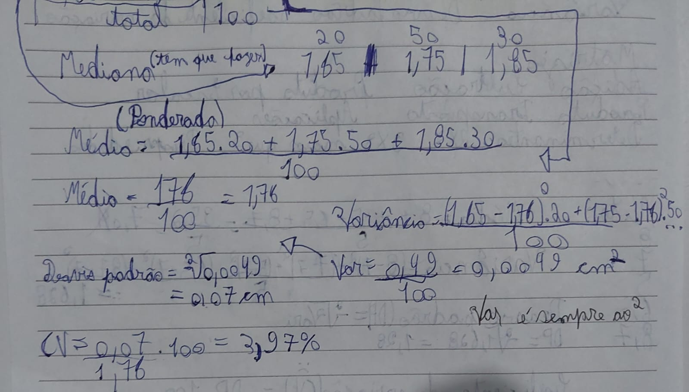
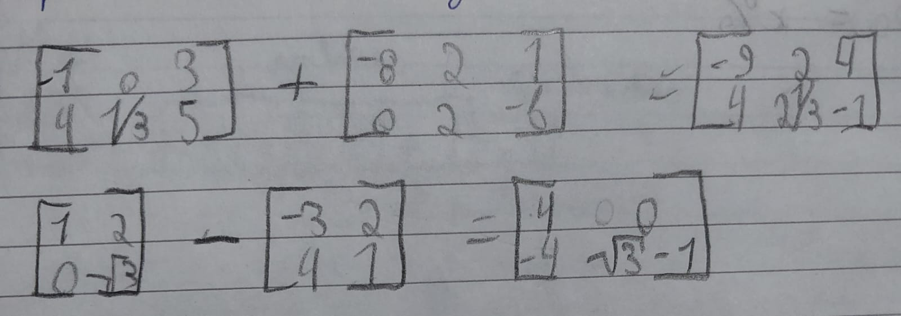
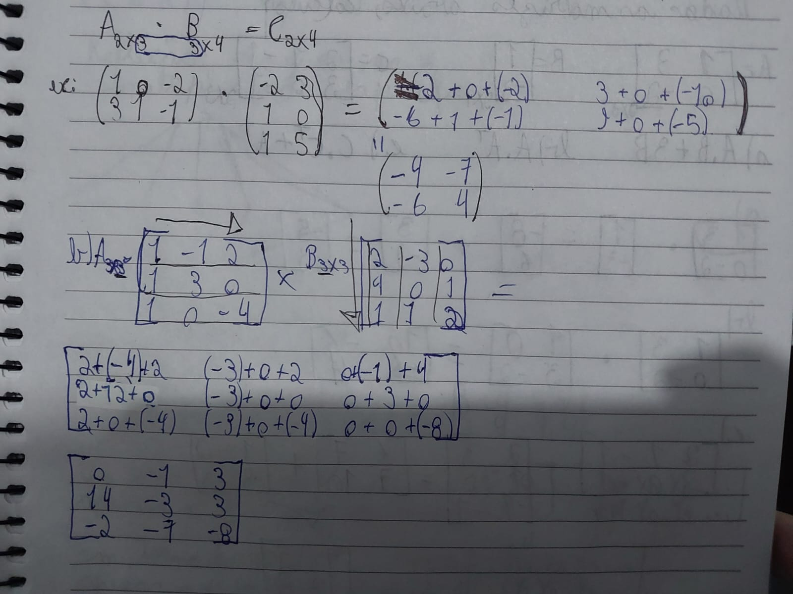
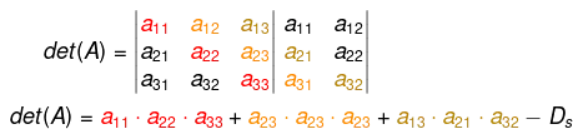
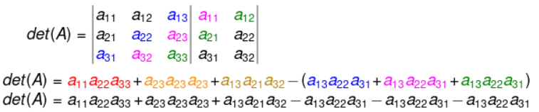
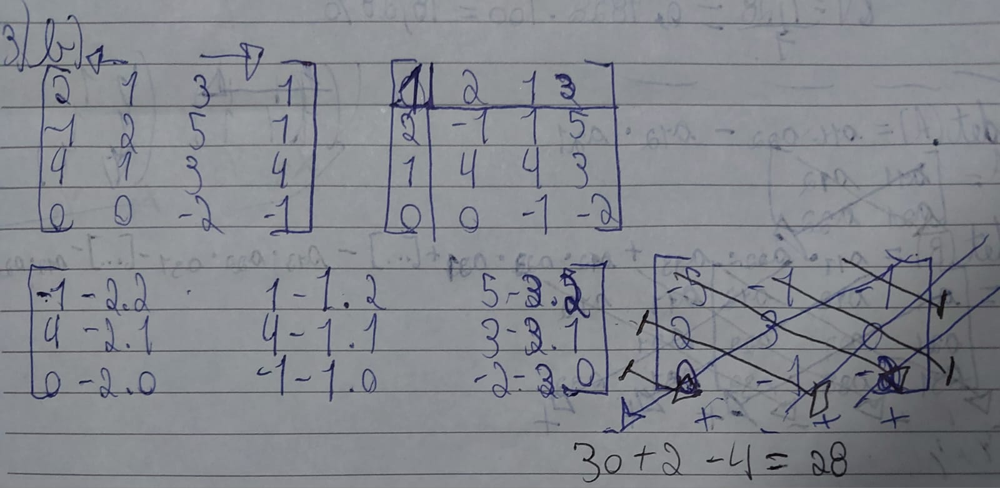

Sumário
Estatística Básica
Amplitude Total
Se calcula fazendo a diferença entre o maior e o menor valor da série de dados
Exemplo: Dados: 7, 5, 3 → Amplitude Total = 7-3=4
Desvio Médio
É a média da diferença entre cada elemento da série e a média dos elementos, é sempre positivo(entre módulos).
Exemplo: Dados: 7, 5, 3 → Média = 15/3 = 5 DM = ( |7-5| + |5-5| + |3-5| ) /3 = (2 + 0 + 2)/3 = 1,333...
Média Aritmética
Obtida somando todos os valores de um conjunto de dados e dividindo pelo número total de elementos.
Exemplo: Dados: 5, 7, 8, 10, 10 → Média = (5 + 7 + 8 + 10 + 10) / 5 = 8
Mediana
É o valor central de um conjunto ORDENADO de forma crescente ou decrescente de números. Se houver número par de elementos, se faz a média aritmética dos dois centrais.
Exemplo: Dados: 1, 3, 5, 7, 9 → Mediana = 5
Dados: 1, 3, 5, 7 → Mediana = (3 + 5)/2 = 4
Moda
A moda vai ser o número que mais se repete no conjunto.
Exemplo: Dados: 2, 4, 4, 6, 8 → Moda = 4
Variância
Indica o grau de dispersão em relação à média, o resultado sai elevado ao quadrado.
Fórmula: Var(X) = Σ(xᵢ - μ)² / n
Esta fórmula significa que a variância é calculada somando(Σ) os quadrados da subtração entre os termos e a média(aritmética ou ponderada)
Exemplo: Dados: 2, 4, 6, 8 → Média = 5 → Var(X) = [(2-5)² + (4-5)² + (6-5)² + (8-5)²]/4 = 5
Desvio Padrão(DP)
É calculado apartir da raiz quadrada da variância. Demonstra o quão dispersos os valores são.
Exemplo: Desvio padrão = √5 ≈ 2,24
Os valores: 2, 4, 6, 8, variam em média 2,24
Coeficiente de Variação(CV)
Usado para comparar grupos de dados de diferente natureza ou que tenham média diferente, o resultado sai em porcentagem.
Fórmula: CV = Desvio Padrão /Média * 100
Distribuições de Frequência
Organizam os dados em classes com as respectivas frequências.
| Altura(cm) | Atletas |
|---|---|
| 1,60 - 1,70 | 20 |
| 1,70 - 1,80 | 50 |
| 1,80 - 1,90 | 30 |
| Total | 100 |
Nesse caso será usado com média ponderada, segue o exemplo abaixo com cálculos possíveis.
Matrizes
Uma matriz é uma tabela de números dispostos em linhas e colunas. Operações básicas incluem:
- Adição/Subtração:
A adição e subtração se dá normalmente, somando os termos das respectivas posições em metrizes de mesma ordem
E a subtração se dá pelo mesmo processo
Exemplo:
- Multiplicação por escalar:
A multiplicação escalar é quando multiplica-se a matriz por um número qualquer
Exemplo:
5 * |0 1 -2| = |0 5 -10|
|1 4 -1| |5 20 -5|
- Multiplicação de matrizes:
Para a multiplicação entre matrizes existe uma regra em que uma matriz só pode ser multiplicada por outra se a primeira matriz tiver um número de colunas igual ao número de linhas da segunda matriz. Nesse caso a ordem da multiplicação importa pois o cálculo é feito multiplicando as colunas da primeira com as linhas da segunda matriz.
Exemplo:
A = |1 2| B = |5 6|
|3 4|, |7 8|
A×B = |(1×5+2×7) (1×6+2×8)| |19 22|
|(3×5+4×7) (3×6+4×8)| = |43 50|

- Transposição de Matrizes
A transposição de matrizes é a matriz com as linhas e colunas invertidas, a transposição de uma matriz transposta é a matriz normal.
É feita da seguinda maneira
A = |1 4| |1 2 3|
|2 5| → |4 5 6|
|3 6|
Determinantes
Determinantes só são possíveis de calcular em matrizes quadradas
Ordem 2x2
Em matrizes de ordem 2 por 2 o determinante é calculado fazendo a diferença entre a multiplicação da diagonal principal com a diagonal secundária.
|a b|
|c d| → det = a*d - b*c
Exemplo:
|1 2| → det = 1×4 - 2×3 = -2
|3 4|
Ordem 3x3
Utiliza-se a Regra de Sarrus:
Exemplo:
 Retirado de BrasilEscola -Determinantes
Ordem 4x4
Para fazer o calculo do determinante de uma matriz 4X4, o primeiro termo deve ser igual à 1
Exige cálculo de determinantes de submatrizes 3x3.
Apartir disso você faz esse cálculo
